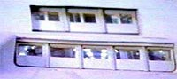
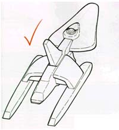

|

Clique aqui
para visitar o
Acervo de colunas


|
A Voyager que no decolou
Foi longo e cansativo o processo de criao. Embora os primeiros traos tenham aparecido em setembro de 1993, durante a ltima temporada de A Nova Gerao e a segunda de Deep Space Nine, o desenho final s foi aprovado e entregue aos construtores de maquetes poucos meses antes da estria na TV. Rick Sternbach imediatamente comeou a fazer rascunhos dessa nave sem nome, antes mesmo de qualquer esclarecimento por dos produtores. As principais
referncias saram do design da runabout e da fonte primria
de inspirao de Sternbach: a natureza. Os modelos de Jornada
sempre foram criados a partir da figura de animais rpidos e
lisos, e a USS Voyager NCC-74656 teve em sua forma embrionria as
caractersticas de uma baleia orca, uma arraia e alguns tipos de
pssaros. Formas biolgicas foram enrijecidas e
transformadas em estruturas a que foram atribudas funes
preliminares, como radiadores ou exticos estabilizadores de
dobra. Seguindo o padro da Frota Estelar, o artista reservou uma
rea para a ponte no deck 1 e uma srie de espaos para as
janelas dos alojamentos da tripulao ao longo do casco,
recintos que seriam construdos no set. As janelas so um importante fator no design. necessria a coordenao entre os vrios departamentos do estdio e um construtor de maquetes de fora, para garantir a continuidade entre o exterior da nave e seu interior. J que a Voyager seria menor, estruturas como as janelas teriam de ser proporcionalmente maiores e mais visveis, exigindo mais detalhes coerentes com os cenrios. Mesmo na primeira fase do projeto, o produtor de efeitos especiais Dan Curry lembrou Sternbach das regras gerais do design de miniaturas. Precisava-se ter certeza de que os pontos de encaixe do controle de movimento estivessem prximos ao centro de gravidade do modelo, e que o encaixe do ventre fosse a parte mais baixa da nave, para evitar problemas com a filmagem em tela azul. Fao uma
pequena pausa aqui para comentar esse ponto. A preocupao com
os detalhes, sempre foi um dos pontos mais altos de Jornada
e particularmente, um dos motivos mais fortes   Assim, alguns padres foram estabelecidos. A maior parte das naves da Frota parece ter cerca de 3,90m entre decks, divididos entre a altura das paredes (no caso, construdas em set) e os 60cm compostos pelo piso, geradores de gravidade e diversos condutes. Nesse estgio, comparada Enterprise-D, que tinha aproximadamente 633m de comprimento, a Voyager deveria ter entre 150 e 360m. A leva inicial de projetos da nave foram organizados em um livro ao final de maro de 1994, para dar aos produtores um ponto de incio para discusso sobre o que haviam gostado, desgostado, ou o que queriam mudar. As especificaes imaginrias foram dadas: Comprimento: 220 metros; Massa: 547.000 toneladas mtricas; Tripulao: 200. Um grfico em escala virtualmente comparava a Voyager a todas as Enterprises. Alguns esquemas diferentes para a articulao das naceles foram sugeridos, incluindo asas horizontais que se moviam e encaixavam por baixo. Nos planos mais normais, parecia que o casco primrio poderia se separar, mas depois essa idia foi eliminada. Foi entre abril e maio de 1994 que a noo real da nova nave emergiu. A frente do casco primrio, antes angular e pontiaguda, ficou mais leve e arredondada, ainda permitindo a separao, e o disco e engenharia fundiam-se em uma s estrutura, de onde saam amplas torres que terminavam em longas naceles. Portas nas naceles poderiam se abrir, expondo as bobinas de dobra para um novo tipo de salto de energia. Os motores de impulso foram colocados por baixo, como nas naves runabout. Nesse design, todas as partes familiares da Frota foram adicionados, em tipo e posio, muitas das quais permaneceram na verso final.Algumas modificaes mais tarde, a equipe se deparou com uma fuso entre o formato da runabout e da classe Excelsior. Essa variao particular recebeu aprovao adicional dos produtores e seguiu para a fotocpia inicial de planta e estdio de maquetes de estudo. Sternbach pediu um 'rascunho' de mais de 1,20m da nave (a essa altura j batizada 'USS Voyager'), o tamanho estimado do modelo usado em cena naquela poca. Da viso de cima, ele derivou a de baixo, lados, proa e popa. A elevao dos lados mostrava 14 decks e u comprimento de quase 300m. Trabalhadas as estruturas principais, Sternbach comeou a desenhar peas de hardware internas, como os lanadores de torpedos fotnicos, reatores de impulso, e o ncleo do reator. A Engenharia deveria estar situada na altura do deck 7. Dependendo de como os sets da ponte, sala da capit e da sala de conferncia sassem, o artista fecharia alguns contornos externos sobre eles e completaria o mdulo no topo da nave. Das plantas, era possvel extrair 'fatias' de uma dos duas polegadas do casco. Quando essas fatias foram transferidas para a prancha de espuma e cortadas, montadas, cobertas com massa plstica e ento repintadas, um modelo em escala tridimensional da Voyager surgiu. O departamento de efeitos visuais poderia estudar a maquete para o trabalho de filmagem, e enviar cpias das plantas para os construtores de miniaturas para oramento. Sternbach continuou a escrever detalhes tcnicos e a rascunhar novas possveis peas, mantendo o olho atento par o que os projetistas estavam fazendo com os itens principais, como o refeitrio e o alojamento da capit. Quanto sala dela e a de conferncia, os cenrios tinham janelas distintas que seriam rapidamente identificadas do exterior. No apenas o alojamento da oficial teria cinco janelas, mas tambm havia verses de uma, duas ou trs que teriam de ser espalhadas pelo casco. No entanto, parecia haver srios problemas, do ponto de vista do design, para paramentar a miniatura com todos os sistemas fictcios necessrios, ou at mesmo construi-la e film-la. Os designs dos sets at combinavam em cor e forma. Essa verso parecia rpida, mas repleta de slidos apetrechos por fora e, assim que Sternbach estava para produzir uma serie final de plantas para os construtores, os produtores perguntaram se ele poderia fazer uma nave mais curva e harmoniosa. Toda a concepo foi ento abandonada e um novo projeto teve incio. Na prxima coluna: saiba como Sternbach transformou esse beco sem sada do design na nave que todos conhecemos hoje. Esta
coluna foi baseada nos artigos DESIGNING THE USS VOYAGER
(STAR TREK: THE MAGAZINE edies 19 e 20, NOV e DEZ 2000)
e "DESIGNING
STAR TREK: VOYAGER" (STAR TREK: THE MAGAZINE edio 28,
JUL 2001). O material foi cedido pelo Federation
Starship Datalink Daniel
Sasaki co-editor do Trek
Brasilis |
 C
C{kind=link}
{kind=link}
{kind=link}
{kind=link}
{kind=link}
{kind=link}